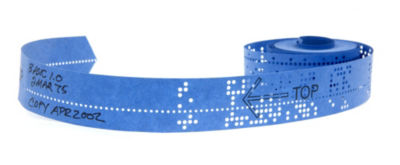

1960년대 후반 통신 회사인 AT&T와 MIT, GE(제네럴 일렉트릭)은 협심하여 Multics라는 여러 사용자가 함께 작업
하는 운영체제(멀티태스킹운영체제)를 만들었다.(리처드 스톨먼이 MIT소속으로 이 연구에 참여했다.)(1969) 여기
서 AT&T의 벨연구소 소속 ken thompson은 이를 심심풀이 삼아 1인이 작업하는 싱글태스킹운영체제로 바꾸어 이
를 UNIX로 이름 붙였다. 1974년에 소프트웨어에 대한 혼란이 가중되자 미국 정부는 소프트웨어 원저자가 저작권을 주장할 수 있게
법으로 재정한다. 그 후 합법적으로 소프트웨어에 저작권을 주장하고 라이선스 수수료를 받을 수 있게되자 소프트
웨어에서 코드를 무료로 제공하는 일은 사라지기 시작하였다. 여기서 더 나아가 어려 중소기업과 IBM(1983),
AT&T(이 즈음 반독점이 풀렸다, 1979)은 불법재배포를 우려해 코드를 공개하지 않고 컴파일 된 프로그램만 팔기
시작했다. 1976년에는 Microsoft의 빌게이츠가 그 유명한 자사 제품인 altair BASIC 소스코드 가공, 재배포는 도둑
질임을 강조하는 기고문을 home brew computer club 발행지에 기고하기도 했다. 그렇게 코드 비공개는 소프트업
계의 준표준화가 되어가는 듯 했다.
